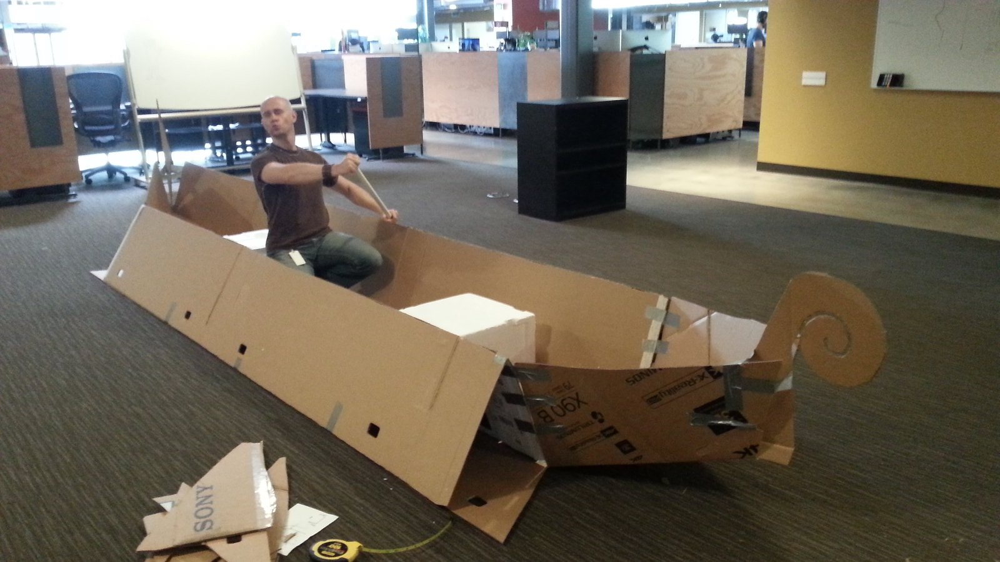
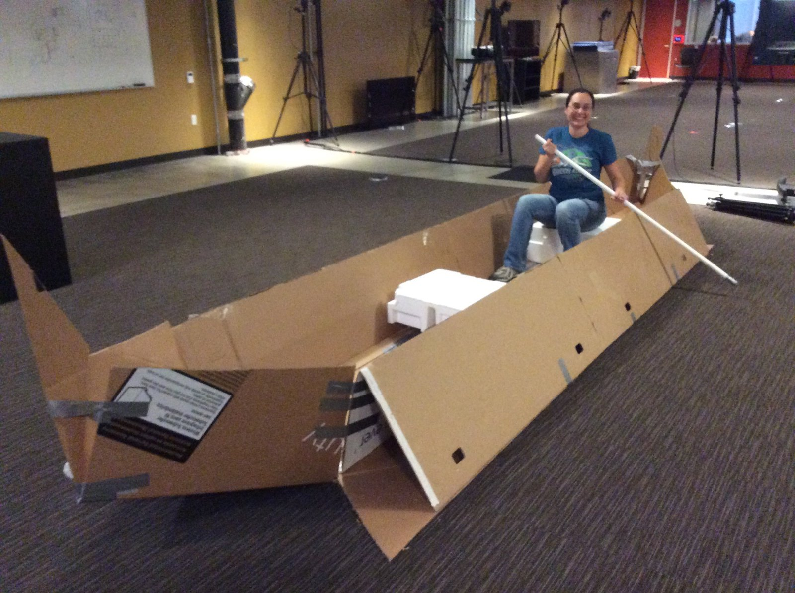
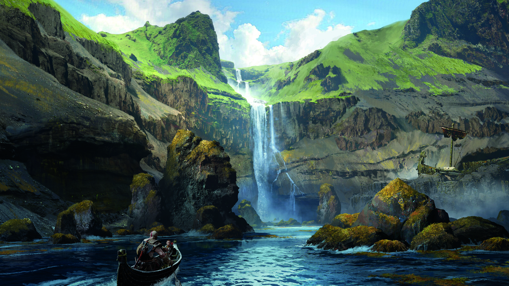
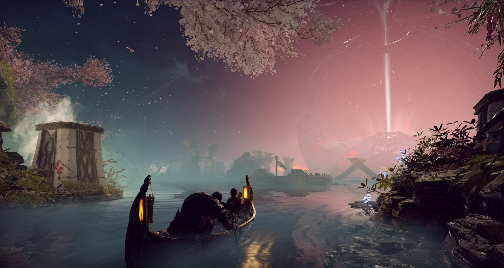

The boat was a fantastically interesting feature to work on. For a long time, going as far back as God of War II, Cory wanted a boat in the game. In the previous games there wasn’t a narrative conceit to justify the addition of a playable boat. But, for this reimagined God of War, we made exploration and storytelling big pillars of our focus… and with Caldera Lake as our hub environment, it finally made sense to bring a playable boat to God of War.
God of Oar The first boat prototype was basic. We placed Kratos in a seated position and turned on a boat model. Here we adjusted Kratos’ speed, friction and general movement model to start to get a feel for what it would be like control a vehicle in our game.
With the initial prototype in place, we started doing a lot of research. Early on, we made the decision that Kratos would use a single paddle to propel the boat. This decision meant we had more in common with a single person canoe than other types of boats, at least for our animation reference. After watching a lot of videos of canoe paddling, we had an idea of how Kratos would animate to paddle the boat. Now was the time to capture some animations, so we built a life-size cardboard boat in one of our mocap stages. One of the challenges of a canoe-style single-paddle boat was just how many animations it required. Anytime the left stick was moved, the boat moved, and Kratos with it. This meant turns, moving forward, moving backward, and rotating in place all required individual animations. Additionally, it had to look accurate when Kratos changes the oar positioning from left to right. Depending on where Kratos is during his paddle stroke animation I set up timing windows which allowed the oar to change from side to side, and maintain the correct “phase” as it crossed back to the other side. The quality of these transitions, which respond quickly to player input, is one of the little details I’m most proud of.
Turning was one of the most difficult aspects of the boat to get right. The new God of War has a strafe navigation model, which was a departure from the previous games. This was great for precision axe throwing and to support our cinematic camera, but the boat is largely about exploration, so requiring the player to move the camera to steer the boat deprived players of their ability to look at their surrounding and take in all of the details of Caldera Lake. With that in mind, we made the decision to keep all of the boat movement on the left stick.
Some additional boat details:
There are over 600 unique animations for the boat
There are more than 750 lines of dialogue on the boat
Alfheim has a unique boat, oar and light
Every enter and exit animation is different when you acquire Mimir
On docks the boat knows if it’s on the left or right side and the enter/exit animations adjust accordingly
The DualShock 4 LED changes to an “aqua blue” while you are in the boat
Even though it stays in the boat, the oar is considered a weapon pickup in the game engine
At one point there was a bug where Kratos would be able to exit the boat holding the paddle.